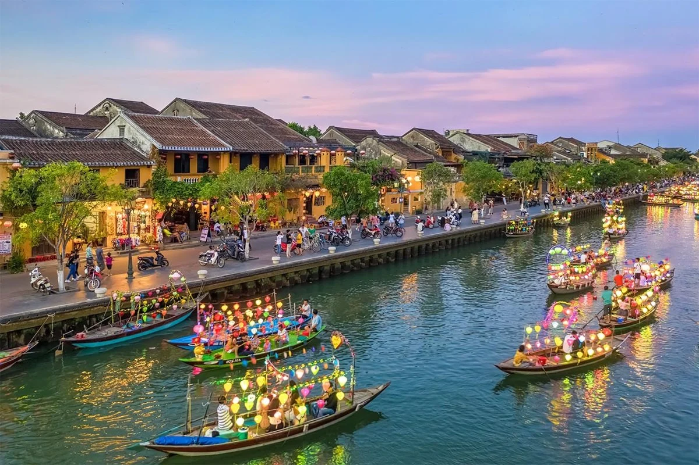
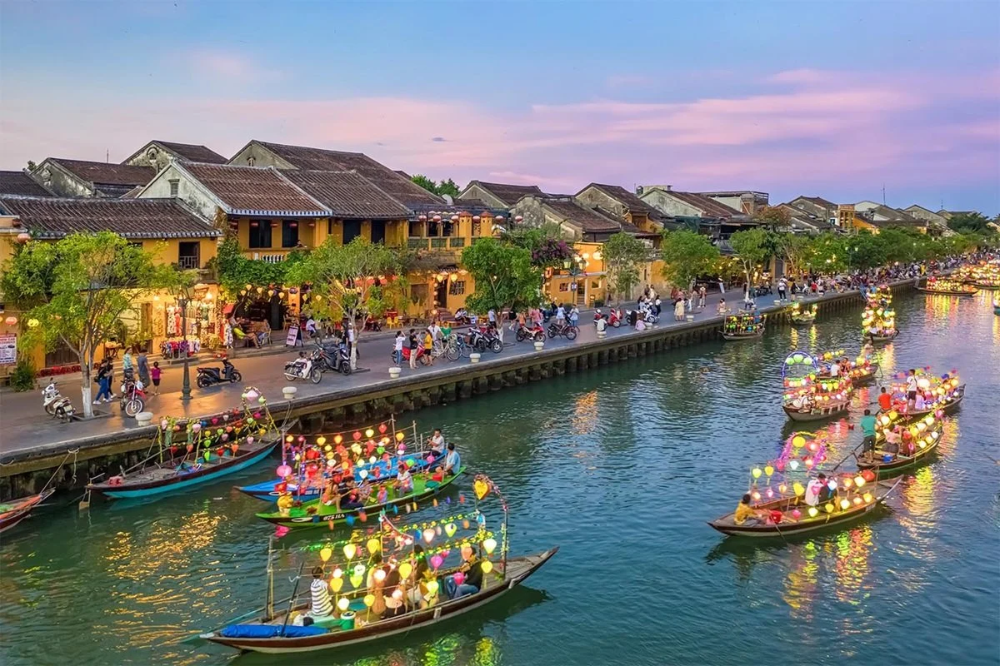

Việt Nam – Vẻ đẹp bất tận
Thiên nhiên đa dạng • Văn hoá lâu đời • Ẩm thực phong phú
🏞 Danh lam
Gợi ý điểm đến theo 3 miền và thời điểm đẹp nhất.
🎎 Lễ hội
Khám phá lễ hội truyền thống và sự kiện văn hoá.
🍜 Ẩm thực
Đặc sản vùng miền, hương vị đặc trưng của Việt Nam.
Danh lam thắng cảnh nổi bật
Từ núi rừng hùng vĩ đến biển xanh trong, Việt Nam có rất nhiều điểm đến đẹp và giàu trải nghiệm. Hãy bắt đầu với những nơi nổi tiếng nhất.
- Vịnh Hạ Long – kỳ quan thiên nhiên
- Sa Pa – núi rừng và ruộng bậc thang
- Hội An – phố cổ bình yên

 

Lễ hội – Bản sắc văn hoá
Những ngày hội truyền thống thể hiện lòng biết ơn tổ tiên và tinh thần cộng đồng.
Lễ hội truyền thống
Lễ hội Việt Nam phong phú theo mùa và theo vùng miền, vừa trang nghiêm vừa rộn ràng. Mỗi lễ hội đều có nguồn gốc, ý nghĩa và các hoạt động đặc trưng.
- Lễ hội Chùa Hương
- Giỗ Tổ Hùng Vương
- Lễ hội pháo hoa Đà Nẵng
Ẩm thực Việt Nam
Ẩm thực Việt Nam nổi bật bởi sự cân bằng hương vị và cách kết hợp nguyên liệu tinh tế. Mỗi miền lại có “chất riêng” rất dễ nhận ra.
- Miền Bắc: thanh nhẹ
- Miền Trung: đậm và cay
- Miền Nam: ngọt và béo

Gợi ý món nổi bật
Phở • Mì Quảng • Bánh xèo – ba đại diện dễ bắt đầu.